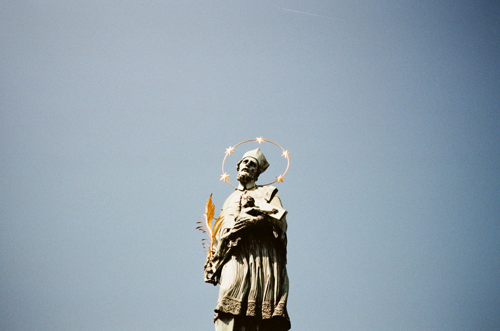

About Anabela
Anabela is a photographer that uses photography as an approach to mindfulness
photo taken in Prague
Body Of Work
- Personal experiences
- Photography techniques
- Lessons learned
Cameras
Cameras that I own and have been tools for capturing my journey. Click on the links below to learn them